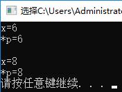
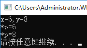
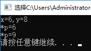
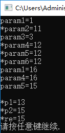

在C语言中static关键字有以下的作用
1，可以用来修饰局部变量。局部变量在函数内部定义的，只有在函数内部有效（作用域），其缺省的存储方式是动态存储的，即指令执行到变量定义处时才给变量分配存储单元，函数执行结束后变量的内存单元就会被释放掉（生命周期）。用static声明局部变量时，则会改变变量的存储方式，使变量成为静态局部变量，即在编译时就为变量分配内存，直到程序运行结束退出才释放内存单元。如果在子函数中的变量，如果想要这个变量在函数执行结束后不被释放掉，可以使用static修饰。
2，static修饰全局变量的时候，这个全局变量只能在本文件中访问，不能在其它文件中访问，即便是extern外部声明也不可以。
3，static修饰一个函数，则对函数的连接方式产生影响，这个函数的只能在本文件中调用，不能被其他文件调用。这个有点类似于C#中的private。使用静态函数的好处是，不用担心与其他文件的同名函数产生干扰，另外对函数本身也是一种保护机制。
const关键字用来定义常量，被它修饰的变量值不能再改变。
const在修饰变量的时候一定要初始化，否则之后就不能再进行赋值了。
1，常量指针不能通过这个指针改变变量的值，但是可以通过其他的引用来改变变量的值。
/*
xutopia
*/
#include "stdio.h"
int main()
{
int x = 6;
const int *p;
p = &x;
printf("x=%d\r\n", x);
printf("*p=%d\r\n", *p);
x = 8;
printf("\r\nx=%d\r\n", x);
printf("*p=%d\r\n", *p);
system("pause");
}运行结果如下

2，常量指针指向的值不能通过这个指针改变，但是常量指针可以指向其他的地址。
/*
xutopia
*/
#include "stdio.h"
int main()
{
int x = 6;
int y = 8;
const int *p;
p = &x;
printf("x=%d,y=%d\r\n", x, y);
printf("*p=%d\r\n", *p);
p = &y;
printf("*p=%d\r\n", *p);
system("pause");
}
3，指针常量是指针本身是一个常量不可以再指向其他地址
/*
xutopia
*/
#include "stdio.h"
int main()
{
int x = 6;
int y = 8;
int *const p=&x;//指针常量
printf("x=%d,y=%d\r\n", x, y);
printf("*p=%d\r\n", *p);
system("pause");
}区分常量指针和指针常量的关键就在于 * 的位置。为了方便记忆，把 * 读作“指针”，把const读作常量：
int const * x：常量指针；
int *const x：指针常量。
4，指向常量的常量指针，这种指针指向的位置不能改变，指向的值也不能改变，但是依然可以通过其他应用来改变。
/*
xutopia
*/
#include "stdio.h"
int main()
{
int x = 6;
int y = 8;
const int* const p = &x;
printf("x=%d,y=%d\r\n", x, y);
printf("*p=%d\r\n", *p);
//*p = 9;//err
//p = &y;//err
x = 9;
printf("*p=%d\r\n", *p);
system("pause");
}
参数参数也可以用const来修饰，防止函数修改参数中的内容，具体特性如上诉所介绍，常量指针，指针常量，常量指针常量。函数的返回值也可以用const来修饰，不过意义不是很大。
/*
xutopia
*/
#include "stdio.h"
const int* fun1(int param1, int* param2, const int param3, const int* param4, int *const param5,const int *const param6)
{
printf("param1=%d\r\n", param1);
printf("*param2=%d\r\n", *param2);
printf("param3=%d\r\n", param3);
printf("*param4=%d\r\n", *param4);
printf("*param5=%d\r\n", *param5);
printf("*param6=%d\r\n", *param6);
param1 = 16;
printf("param1=%d\r\n", param1);
*param2 = 13;
//param3 = 14;//err
param4 = ¶m1;
printf("param4=%d\r\n", *param4);
//*param4 = 14;//err
*param5 = 15;
printf("param5=%d\r\n", *param5);
//param5 = ¶m1;//err
//param6 = ¶m1;//err
//*param6 = 1;//err
return param5;
}
int main()
{
int a = 11, b = 12;
int* p1, *p2;
const int *re1;
int *re2;
p1 = &a;
p2 = &b;
re1 = fun1(1, p1, 3, p2, p2, p2);
//re2 = fun1(1, p1, 3, p2,p2,p2);//right
printf("\r\n*p1=%d\r\n", *p1);
printf("*p2=%d\r\n", *p2);
//printf("*re=%d\r\n", *re2);
printf("*re=%d\r\n", *re1);
system("pause");
}
全局变量的作用域是整个文件，如果用在其他文件中用external声明，那么全局变量可以作用到其他的文件夹，为了防止全局变量在使用的过程中被不经意的修改，可以用const修饰，这样就可以防止不必要的修改。
volatile关键字提醒编译器它所定义的变量随时都可能改变，因此编译后的程序每次需要存储和读取这个变量的时候，都对直接从这个地址中读取数据。
如果没有volatile关键字，则编译器可能优化存储和读取，如果这个变量由别的程序更新的话，将出现不一致的现象。如果用这个关键字声明变量，编译器对访问该变量的代码就不再进行优化，从而可以稳定地访问特殊的地址。
简而言之，volatile声明的变量，就是要求程序运行的时候，每次从这个变量的地址读取。
编译器优化介绍：由于内存访问速度远不及CPU处理速度，为提高机器整体性能，在硬件上引入硬件高速缓存Cache（例如STM32某些型号就支持cache），加速对内存的访问。另外在现代CPU中指令的执行并不一定严格按照顺序执行，没有相关性的指令可以乱序执行，以充分利用CPU的指令流水线，提高执行速度。以上是硬件级别的优化。再看软件一级的优化：一种是在编写代码时由程序员优化，另一种是由编译器进行优化。编译器优化常用的方法有：将内存变量缓存到寄存器；调整指令顺序充分利用CPU指令流水线，常见的是重新排序读写指令。对常规内存进行优化的时候，这些优化是透明的，而且效率很好。由编译器优化或者硬件重新排序引起的问题的解决办法是在从硬件（或者其他处理器）的角度看必须以特定顺序执行的操作之间设置内存屏障（memory barrier），Linux 提供了一个宏解决编译器的执行顺序问题。void Barrier(void)这个函数通知编译器插入一个内存屏障，但对硬件无效，编译后的代码会把当前CPU寄存器中的所有修改过的数值存入内存，需要这些数据的时候再重新从内存中读出。